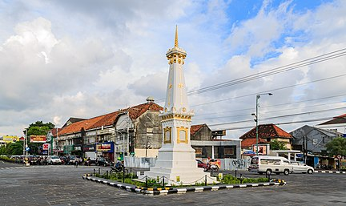

Yogyakarta
ogya atau Jogja adalah ibu kota daerah istimewa sekaligus pusat pemerintahan dan perekonomian dari Daerah Istimewa Yogyakarta, Indonesia. Kota ini adalah kota besar yang mempertahankan konsep tradisional dan budaya Jawa.
Salah satu kemantren di Yogyakarta, yaitu Kotagede pernah menjadi pusat Kesultanan Mataram antara kurun tahun 1575–1640. Kini, Yogyakarta menjadi tempat tinggal dua penerus Mataram, yakni Sultan Hamengkubuwana dan Adipati Paku Alam, yang berada di Keraton Ngayogyakarta dan Pura Pakualaman.